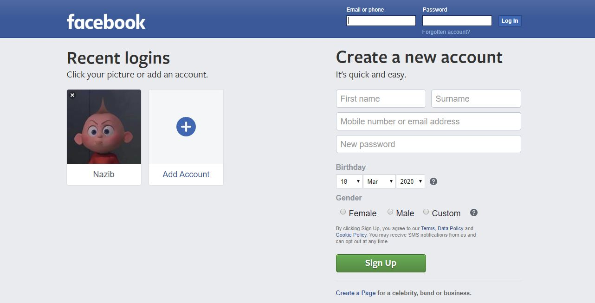
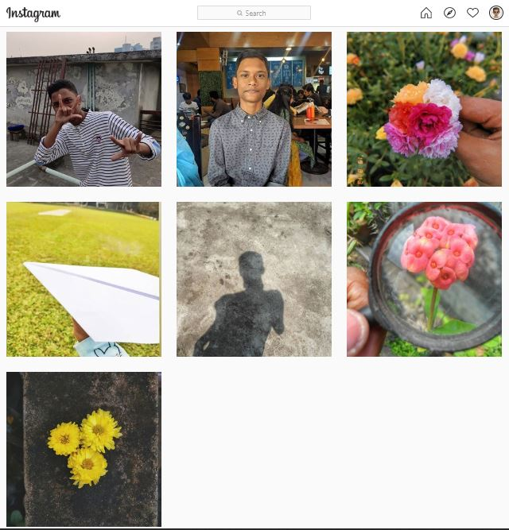
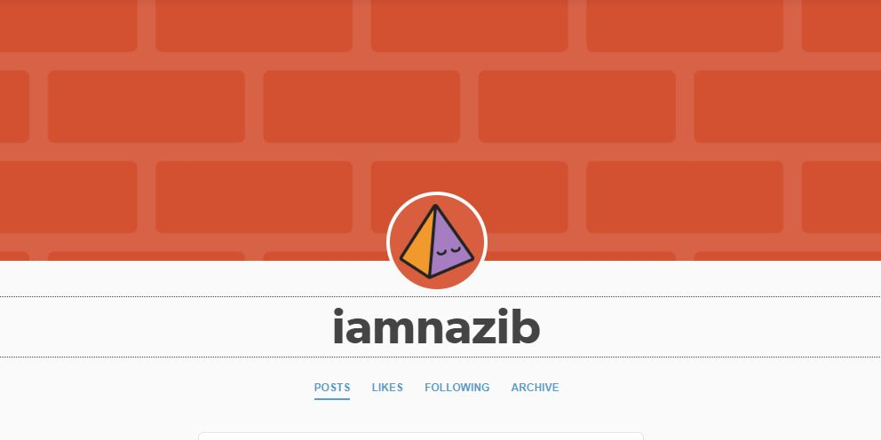

I don't use facebook much these days. I only use facebook to provide tech-support to members of Bangladeshi gaming and PC hardware related communities like: GameVerse Bangladesh, Gamers Of Bangladesh etc.
 Link to Facebook profileNowadays I use Instagram a lot. I mainly post stories and text my friends in Instagram. I rarely post as I am not photogenic and I almost never get to take a good photo of myself. That's why you'll see a good percentage of abstract photography in my feed. I've archived many non-par photos I had uploaded before as well.
You can check my profile out @iamnaazib
I use tumblr as a safe place to write up my thoughts. No one I know uses Tumblr. I post for myself only. So you wont see any hashtags in my posts or followers in my profile. And I'm okay with that
Link to my blog: iamnaazib.tumblr.com